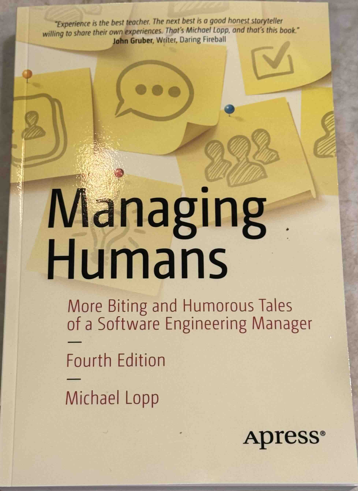

isbn-13: 9781430243144
Audible
If you find the leadership and management book genre to be too earnest then you might enjoy this down-to-earth and sometimes cynical view of business and leadership. I listened to the audiobook of the 3rd edition which was published around 2016 but has it’s roots firmly in the prior decade. As such a lot of the examples and analogies are quite dated, but I found that to be kind of endearing also - an echo of an earlier age when “high-speed internet” meant DSL. Some of the later chapters were hit or miss and the book overall shows its origins in the Rands in Repose blog posts. There was enough value in there for me to buy the paperback 4th edition though.
“A successful organization is built of layers of people that are glued together with managers. Each layer is responsible for a broad task, be it engineering or QA or marketing. Between each layer is a manager whose job it is to translate from one layer to the next… in both directions. He knows what his employees want. He knows what his manager wants, and he’s able to successfully navigate when those wants differ.” Chapter 2 (p17): Managers Are Not Evil
“One of your many jobs as a manager is information conduit, and the rules are deceptively simple: for each piece of information you see, you must correctly determine who on your team needs that piece of information to do their job.” Chapter 12 (p75): Information Starvation
“I’m not suggesting that you should be worried about your job because some bright human overseas is gunning for you, I’m suggesting that you should be worried about your job because the evolution of how software development occurs might be moving faster than you are. You’ve been working for ten years in your job, five years as a manager, and you’re thinking,”I know how to develop software.” And you do. For now. ….With smaller teams doing more for less, removing yourself from the code strikes me as a bad career move. Even in a monstrous company laden with policy, process, and politics, you can’t forget how to develop software. And how to develop software is changing. Now. Right under your feet, this very second. ….From where you are sitting in your soon-to-be-director chair, do you see software development changing within your company? If the answer is yes, my next question is: How is it changing, and what are you going to do about it? If your answer no, then you need to move your chair because, I swear to you, software development is changing right this second. How in the world are you going to scale if you’re slowly forgetting how software is made?” Chapter 20 (p121): An Engineering Mindset
Publisher’s Description
The humor and insights in the 2nd Edition of Managing Humans are drawn from Michael Lopp’s management experiences at Apple, Netscape, Symantec, and Borland, among others. This book is full of stories based on companies in the Silicon Valley where people have been known to yell at each other and occasionally throw chairs. It is a place full of dysfunctional bright people who are in an incredible hurry to find the next big thing so they can strike it rich and then do it all over again. Among these people are managers, a strange breed of people who, through a mystical organizational ritual, have been given power over the future and bank accounts of many others. Whether you’re an aspiring manager, a current manager, or just wondering what the heck a manager does all day, there is a story in this book that will speak to you—and help you survive and prosper amongst the general craziness. Lopp’s straight-from-the-hip style is unlike any other writer on management. He pulls no punches and tells stories he probably shouldn’t. But they are massively instructive and cut to the heart of the matter whether it’s dealing with your boss, handling a slacker, hiring top guns, or seeing a knotty project through to completion. This second editions expands on the management essentials. It will explain why we hate meetings, but must have them, it carefully documents the right way to have a 1-on-1, and it documents the perils of not listening to your team. Writing code is easy. Managing humans is not. You need a book to help you do it, and this is it.